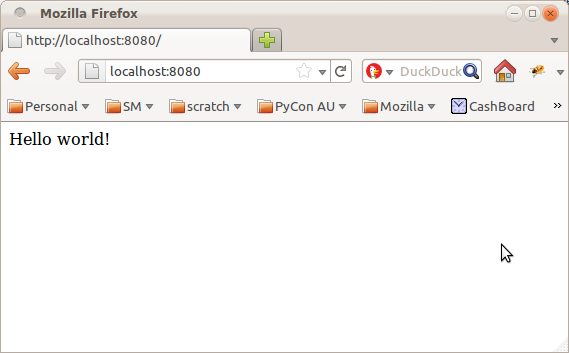
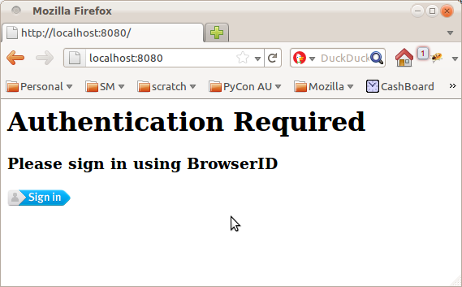
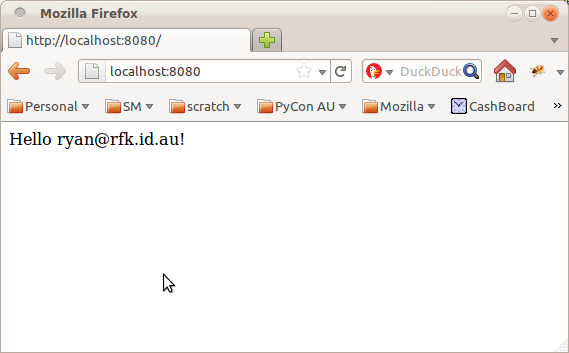

There are a couple of really exciting projects underway at Mozilla right now.
The first is BrowserID, a distributed single-signon system from the Mozilla Identity Team. BrowserID sports a very slick sign-in process, simple integration with your existing software stack, and is designed from the ground up to provide strong user privacy guarantees.
The second is Project Sagrada, a platform for quickly building secure, scalable web applications from the folks I work with on the Mozilla Services Team. While initial development is being driven by Mozilla's internal projects and needs, the hope is that one day developers will be able to write some simple service definitions and deploy their applications across Mozilla's infrastructure.
Of course, we're not there yet, but we're building up to it piece by piece. One piece I've been working on, and which is coming along quite nicely, is authentication. We are building a secure, flexible and efficient authentication stack on top of some key Python web technologies such a Pyramid and repoze.who.
So without further ado, here's a glimpse of my first tiny piece of Project Sagrada: adding BrowserID support to your Pyramid app with just a few lines of configuration.
{% endmark %}Let's start with a simple "hello world" program in Pyramid:
{% syntax python %}from paste.httpserver import serve from pyramid.config import Configurator from pyramid.response import Response def hello_world(request): return Response('Hello World!') if __name__ == '__main__': config = Configurator() config.add_route('hello', '/') config.add_view(hello_world, route_name='hello') app = config.make_wsgi_app() serve(app, host='0.0.0.0') {% endsyntax %}Run this as a script and you'll get a delightful little webpage that says "Hello World!", like this:
Now let's say you want to spice this up a little by including the user's name in the welcome message. Pyramid provides the function "authenticated_userid" to obtain the username of the currently logged-in user, so we can change our "hello_world" view to the following:
{% syntax python %}from paste.httpserver import serve from pyramid.config import Configurator from pyramid.response import Response from pyramid.security import authenticated_userid def hello_world(request): userid = authenticated_userid(request) return Response('Hello %s!' % (userid,)) {% endsyntax %}Restart the script and you will now be greeted with:

Oops. In order to report back your username we first have to get you to log in. Pyramid provides a sophisticated permission-based authorization system, but for the purposes of this demonstration, let's just forbid access unless you are logged in:
{% syntax python %}from paste.httpserver import serve from pyramid.config import Configurator from pyramid.response import Response from pyramid.security import authenticated_userid from pyramid.exceptions import Forbidden def hello_world(request): userid = authenticated_userid(request) if userid is None: raise Forbidden() return Response('Hello %s!' % (userid,)) {% endsyntax %}Restart the script again and...

Not quite. The final piece of the puzzle is configuring authentication the authentication system. For that, we're going to use the pyramid_whoauth package to set up a repoze.who authentication stack, and the repoze.who.plugin.browserid package to link in support for BrowserID. Sounds complicated? There are a few moving parts, but the end result is really quite simple and elegant.
Here's the important point: our view code does not need to change. Instead we simply tweak the configuration of our pyramid app to hook up the necessary components: {% syntax python %}if __name__ == '__main__': settings = { "who.identifiers.plugins": "authtkt browserid", "who.authenticators.plugins": "authtkt browserid", "who.challengers.plugins": "browserid", "who.plugin.browserid.use": "repoze.who.plugins.browserid:make_plugin", "who.plugin.browserid.postback_url": "/login", "who.plugin.authtkt.use": "repoze.who.plugins.auth_tkt:make_plugin", "who.plugin.authtkt.secret": "OH_SO_SECRET", } config = Configurator(settings=settings) config.include("pyramid_whoauth") config.add_route('hello', '/') config.add_view(hello_world, route_name='hello') app = config.make_wsgi_app() {% endsyntax %}
The "settings" component is telling repoze.who what authentication plugins it should use, and how to stitch them all together. There are three aspects here:
Restart the script again and you'll be greeted by a page telling you to log in with BrowserID:
Yeah, it's ugly, nevermind that for now. Click the button, walk through the slick BrowserID login process, and you will be rewarded with the end result:
 By adding three lines of code and a handful of configuration options, we've just enabled a complete login and authentication system for our pyramid app. Thanks to BrowserID, we didn't need to set up a user database, store passwords or confirm email addresses. Thanks to Pyramid, we didn't have to weave authentication boilerplate through all of our view functions. And thanks to repoze.who, we can configure and tweak the authentication stack to precisely suit our needs (for example, you might like to add OpenID support as well).To me, that's pretty magic.